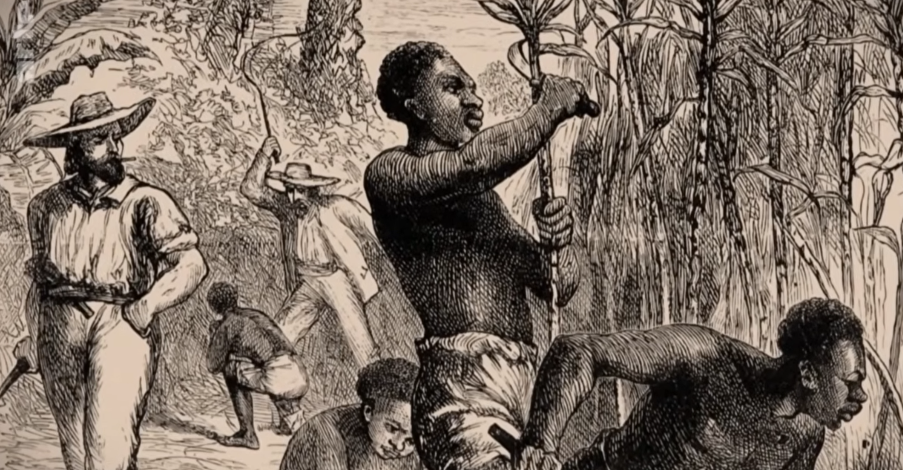
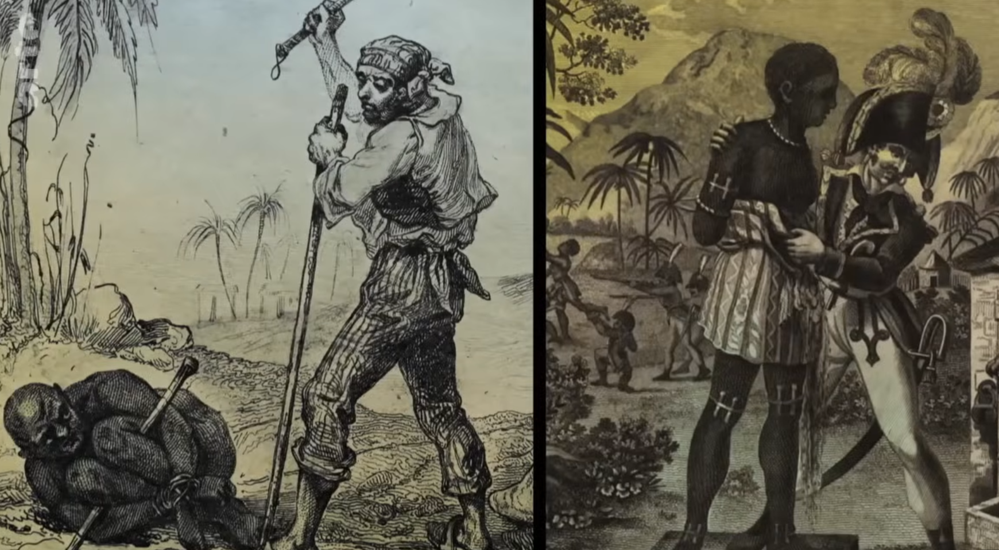
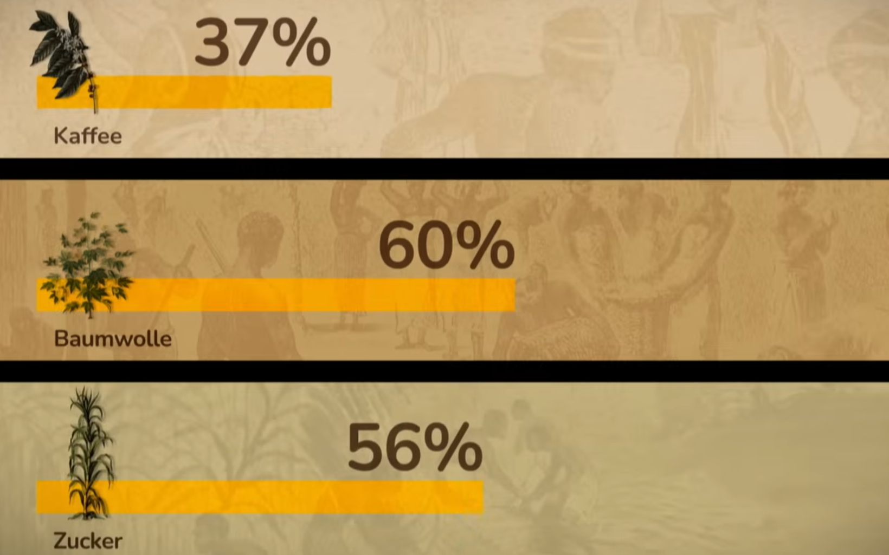
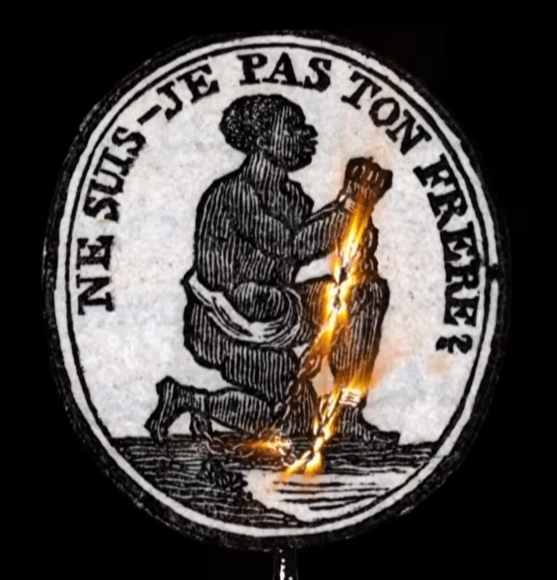
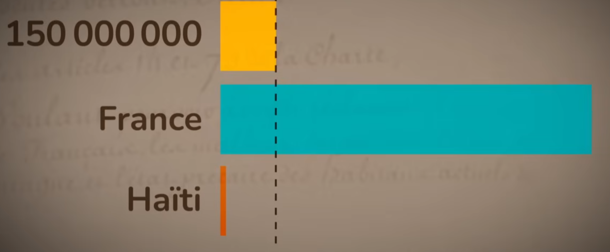
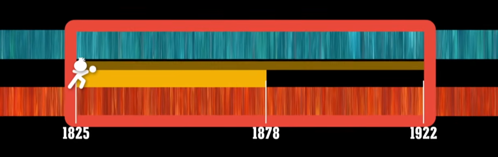

The story of Haiti is one of the most extraordinary and tragic chapters in modern history. Once the wealthiest colony in the entire Caribbean—known as the "Pearl of the Antilles"—Saint-Domingue generated enormous wealth for France through a brutal system of plantation slavery. Yet from this crucible of suffering emerged the only successful large-scale slave revolution in human history, culminating in the creation of the world's first free Black republic on January 1, 1804.
But independence did not bring freedom from exploitation. France's demand for a crippling indemnity in 1825, and nearly a century of debt repayments that followed, would shape Haiti's economic trajectory for generations—a legacy whose effects are still felt today.
Saint-Domingue: France's Golden Colony
Under French colonial rule from 1697, Saint-Domingue rapidly became the most profitable colony in the world. By the late 18th century, it produced approximately 40 percent of all sugar and 60 percent of all coffee imported into Europe. The colony's wealth was staggering: its exports exceeded those of the entire thirteen American colonies combined.
This extraordinary productivity was built entirely on enslaved labor. French plantation owners imported nearly 800,000 Africans to the colony through the transatlantic slave trade—almost double the number brought to all of North America. The mortality rate was so devastating that the enslaved population could only be maintained through continuous importation.


The colonial economy rested on three pillars of forced labor: coffee plantations produced 37% of global supply, cotton accounted for 60%, and sugar represented 56% of world production. These figures, displayed in the chart below, reveal the extraordinary concentration of global commodity production in a single colony—all dependent on enslaved African labor.

The Brutality of the Slave System
The slave system in Saint-Domingue was widely regarded as among the most brutal in the entire Atlantic world. French colonial law, codified in the Code Noir of 1685, theoretically provided minimal protections for enslaved people, but these were routinely ignored by plantation owners who operated with near-total impunity.
The social hierarchy was rigidly stratified. At the top were the grands blancs—wealthy white plantation owners who held most of the economic and political power. Below them were the petits blancs—poorer whites who often served as overseers. A substantial class of gens de couleur libres (free people of color) owned property and even slaves themselves, yet were denied full civil rights. At the bottom, 500,000 enslaved Africans performed the backbreaking labor that generated the colony's wealth.

The famous abolitionist medallion above, inscribed with the French phrase meaning "Am I not your brother?", became one of the most powerful symbols of the anti-slavery movement. The image of a kneeling enslaved man with chains breaking apart captured the moral argument that would eventually help bring down the institution of slavery across the Atlantic world.
The Haitian Revolution (1791–1804)
On the night of August 22, 1791, enslaved people in the northern plains of Saint-Domingue rose up in coordinated revolt. Led initially by Dutty Boukman, a Vodou priest, and later by the brilliant military strategist Toussaint Louverture, the rebellion would grow into a full-scale revolution that defeated the armies of three European empires: France, Spain, and Britain.
Toussaint Louverture emerged as the revolution's most formidable leader. A former enslaved man who had gained his freedom before the revolt, he displayed extraordinary military and political skill, winning seven battles in seven days and transforming a slave rebellion into a sophisticated revolutionary movement. By 1801, he had effectively become governor of the entire island of Hispaniola.
"In overthrowing me, you have done no more than cut down the trunk of the tree of Black liberty in Saint-Domingue. It will spring back from the roots, for they are numerous and deep." — Toussaint Louverture, upon his arrest in 1802
Napoleon Bonaparte, seeking to restore slavery and French control, sent a massive expeditionary force of 20,000 soldiers under General Charles Leclerc. Louverture was captured through treachery and deported to a prison in the French Alps, where he died in 1803. But his prophecy proved correct: under Jean-Jacques Dessalines, the revolutionaries defeated the French army, and on January 1, 1804, Haiti declared its independence—becoming the first free Black republic in history.
The Price of Freedom: France's 150 Million Franc Indemnity
Independence came at an extraordinary cost that went far beyond the battlefield. In 1825, France sent a fleet of warships to Haiti and demanded an indemnity of 150 million gold francs—roughly ten times Haiti's annual revenue—as compensation to former slave owners for their "lost property." The implicit threat was clear: pay, or face re-invasion and the restoration of slavery.

The chart above illustrates the staggering asymmetry of this demand. While France's economy dwarfed Haiti's, the indemnity represented an enormous transfer of wealth from one of the world's poorest nations to one of its richest. Haiti was forced to take out loans from French banks—at punitive interest rates—to begin making payments, creating a cycle of debt that would persist for nearly a century.
The indemnity was later reduced to 90 million francs, but the damage was already done. Haiti's government was forced to divert the vast majority of its national revenue toward debt servicing rather than building schools, hospitals, roads, or other infrastructure that might have supported economic development.

The timeline above traces nearly a century of debt repayment, from the initial demand in 1825 through the renegotiation in 1878 to the final payment in 1922. For almost one hundred years—from twenty-one years after independence until well into the twentieth century—Haiti's economic development was strangled by this obligation to compensate its former enslavers.
The Long Shadow: Economic Legacy and Modern Reparations
The economic consequences of the indemnity cannot be overstated. During the critical decades when other nations in the Americas were investing in industrialization, education, and infrastructure, Haiti was hemorrhaging capital to France. Economists estimate that the total cost of the indemnity and its associated interest payments amounted to between $20 billion and $115 billion in today's dollars.
In 2003, Haitian President Jean-Bertrand Aristide formally demanded that France repay $21 billion in restitution—a figure representing the value of the original indemnity adjusted for inflation and compound interest. France refused, and Aristide was overthrown in a 2004 coup that many observers linked to his reparations campaign. The question of whether France owes a debt to Haiti remains one of the most significant unresolved issues in the economics of colonial reparations.
Implications for Development Economics
Haiti's history offers a powerful case study in the economics of extraction and its long-term consequences. The colonial plantation system represented one of the most extreme forms of economic exploitation in recorded history, generating vast wealth for metropolitan France while destroying the lives and communities of hundreds of thousands of enslaved Africans.
The post-independence indemnity then created what economists call a "debt trap"—a situation where a country's obligation to service external debt prevents it from investing in the domestic capacity needed to generate future growth. Haiti's experience prefigures many of the structural adjustment dynamics that would afflict developing nations in the late twentieth century.
Understanding this history is essential for any serious analysis of Haiti's current economic challenges. The country's poverty is not a natural condition or a consequence of cultural factors—it is the direct result of centuries of extraction, exploitation, and imposed debt that systematically prevented the accumulation of physical, human, and institutional capital.
Sources: Slavery and Remembrance; Liberty, Equality, Fraternity (George Mason University); Restavek Freedom Foundation; Britannica; Wikipedia (Haitian Revolution, Toussaint Louverture, Slavery in Haiti); Public Books.